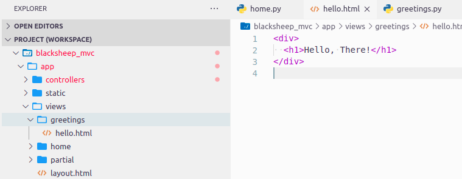
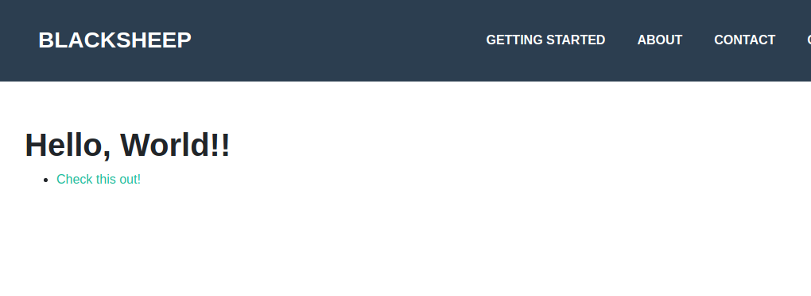

Getting started with the MVC project template¶
This tutorial explains how to create a BlackSheep application using the MVC (Model, View, Controller) project template, covering the following topics:
- Creating an application from a project template, using the BlackSheep CLI.
- Routes defined using classes (controllers).
- Server side templating (views and models).
- Handling parameters in controllers.
- Serving static files
It is recommended to follow the previous tutorial before reading this one.
Requirements¶
- Python version >= 3.10 (3.8 and 3.9 are supported but not recommended for this tutorial)
- Ensure the Python executable is included in the
$PATHenvironment variable. (tip: if you install Python on Windows using the official installer, enable the checkbox to update your$PATHvariable during the installation) - a text editor: any is fine; this tutorial uses Visual Studio Code
Introduction to the BlackSheep CLI¶
The previous tutorial covered the basics of creating an application from
scratch. While that knowledge is important, starting every project from scratch is often unnecessary. BlackSheep provides a command-line interface
(CLI) to simplify the process of starting new projects. The CLI can be installed from the
Python Package Index using the
blacksheep-cli package:
The BlackSheep-CLI provides the create command to start new projects:
The CLI will prompt for input about various options. For the sake of this tutorial, answer:
tutorialfor project namemvcfor the project templateYesfor OpenAPI Documentationessentials-configurationto read settingsYAMLfor app settings format
✨ Project name: tutorial
🚀 Project template: mvc
📜 Use OpenAPI Documentation? Yes
🔧 Library to read settings essentials-configuration
🔩 App settings format (Use arrow keys)
» YAML
TOML
JSON
INI
BlackSheep create.
It is possible to use the create command specifying the project name
and template directly, like in:
blacksheep create some_nameblacksheep create some_name --template api

After a project is created, the CLI displays a message with instructions:
──────────────────────────────────────────────────────────────────────
🏗️ Project created in tutorial
──────────────────────────────────────────────────────────────────────
-- What's next:
cd tutorial
pip install -r requirements.txt
python dev.py
Install the project dependencies:
cdinto the project folder- create a new Python virtual environment (recommended but optional)
- install its dependencies with
pip install -r requirements.txt
Starting the application¶
Start the application using one of the following commands:
# using the provided dev.py file (useful to debug)
python dev.py
# or using the uvicorn CLI
uvicorn app.main:app --port 44777 --lifespan on --reload
Navigate to the local page, opening a browser at http://localhost:44777
(use the same port used in the previous command).
The browser should display this page:

The web application is configured to handle several tasks:
- Build and serve dynamic HTML pages.
- Serve static files (e.g., images, JavaScript, CSS files).
- Expose an API and provide OpenAPI documentation for it.
- Handle application settings and manage application start/stop events.
Let's explore these elements in order, but first, let's review the project's structure.
Project structure¶
The project follows the folder structure outlined below:
├── app
│ ├── (application files)
│ │
│ ├── controllers
│ │ └── (controller files, defining routes)
│ │
│ ├── docs
│ │ └── (files for OpenAPI Documentation)
│ │
│ ├── static
│ │ └── (static files served by the web app)
│ │
│ └── views
│ └── (HTML templates, views compiled by the web app)
│
├── domain
│ └── (domain classes, POCO)
│
├── (root folder, where the main file starting the whole app resides)
├── dev.py (file that can be used to start a development server, useful for debugging)
└── settings.dev.yaml (settings used when the env variable APP_ENV == dev)
└── settings.yaml (base settings file)
- The
appfolder contains files that are specific to the web application, settings, a folder forcontrollersthat define request handlers, folders forstaticfiles and one forviews(HTML templates). - Other packages at the root of the project, like
domain, should be abstracted from the web server and potentially reusable in other kinds of applications. - The root folder contains the
dev.pyfile to start the application in development mode, and settings files with.yamlextension that are read when the application starts (since the YAML format was selected when using theblacksheep createcommand).
Open the project with a text editor¶
Open the project's folder using your favorite text editor.

Routes defined using classes (controllers)¶
The previous tutorial described how routes can be defined using functions:
BlackSheep offers an alternative way to define request handlers: using classes.
Both approaches have pros and cons, which will be described later in
more detail. To see this in practice, create a new file
app/controllers/greetings.py and copy the following code into it:
from blacksheep.server.controllers import Controller, get
class Greetings(Controller):
@get("/hello-world")
def index(self):
return self.text("Hello, World!")
Stop and restart the application, then navigate to
http://localhost:44777/hello-world: it
will display the response from the Greetings.index method.
When the path of a web request matches a route defined in a controller, a new
instance of that Controller is created to handle the request. In other words,
each container instance is scoped to a specific web request. Just like function
handlers, controllers support automatic injection of parameters and dependency
injection to resolve parameters defined in constructors (__init__ methods)
and class properties. This feature enhances development speed and promotes
cleaner code.
Rodi documentation.
Refer to Rodi's documentation for a detailed introduction to dependency injection.
The Controller class provides methods to return various kinds of responses
and offers on_request and on_response extensibility points. These functions
can be overridden in subclasses of Controller to apply logic at the start and
end of each web request.
Automatic import of controllers and routes.
Python modules defined inside controllers and routes packages are
automatically imported by a BlackSheep application. The automatic import
happens relatively to the namespace where the application is instantiated.
Server side templating (views and models)¶
Server-side templating refers to a web application's ability to generate HTML
pages using templates and dynamic variables. By default, BlackSheep achieves
this with the Jinja2 library
developed by the Pallets team.
To see how this works in practice when using controllers, edit the Greetings
controller created previously as follows:
from blacksheep.server.controllers import Controller, get
class Greetings(Controller):
@get("/hello-view")
def hello(self):
return self.view()
Then, create a new folder inside views directory, named "greetings", and
add an HTML file named "hello.jinja".

Copy the following contents into hello.jinja:
Now navigate to http://localhost:44777/hello-view, to see the response from the new HTML view.
Notice how convention over configuration is used in this case, to determine that
./views/greetings/hello.jinja file must be used, because of the convention:
./views/{CONTROLLER_NAME}/{METHOD_NAME}.jinja.
The view currently is an HTML fragment, not a full document. To make it a
full page, modify hello.jinja to use the application layout:
{%- extends "layout.jinja" -%}
{%- block title -%}
Hello Page!
{%- endblock -%}
{%- block description -%}
Project template to create web applications with MVC architecture using BlackSheep web framework.
{%- endblock -%}
{%- block css -%}
<link rel="stylesheet" href="/styles/public.css" />
{%- endblock -%}
{%- block body -%}
<div style="margin: 10em 2em;">
<h1>Hello, There!</h1>
</div>
{%- endblock -%}
{%- block js -%}
{%- endblock -%}
Refresh the page at http://localhost:44777/hello-view to see the result.
In this case, a page layout is applied using: {%- extends "layout.jinja" -%},
with several blocks defined in layout.jinja. For more information on layouts
and features of the templating library, refer to the Jinja2
documentation.
Until now, the tutorial have only demonstrated the Controller and View
components of the MVC architecture. A Model serves as the context for an
HTML view. To include dynamic content in an HTML template, use mustache-style
{{name}} placeholders and pass a model with properties whose names match
the placeholders to the view function.
For example, modify hello.jinja to use dynamic content from a model:
<div style="margin: 10em 2em;">
<h1>Hello, {{name}}!</h1>
<ul>
{% for sentence in sentences %}
<li><a href="{{ sentence.url }}">{{ sentence.text }}</a></li>
{% endfor %}
</ul>
</div>
and greetings.py to contain the following code:
from dataclasses import dataclass
from typing import List
from blacksheep.server.controllers import Controller, get
@dataclass
class Sentence:
text: str
url: str
@dataclass
class HelloModel:
name: str
sentences: List[Sentence]
class Greetings(Controller):
@get("/hello-view")
def hello(self):
return self.view(
model=HelloModel(
"World!",
sentences=[
Sentence(
"Check this out!",
"https://github.com/Neoteroi/BlackSheep",
)
],
)
)
Produces this result: 
Models can be defined as dictionaries, dataclasses, pydantic models, or regular classes implementing a constructor.
Handling parameters in controllers¶
The Getting started guide demonstrated how request handlers support the automatic injection of parameters from HTTP requests. Controllers offer the same functionality, allowing parameters to be automatically read and passed into controller methods:
class Example(Controller):
@get("/example/{value}")
def route_example(self, value: str):
return self.text(f"Got: {value} in route")
@get("/example")
def query_example(self, value: str):
return self.text(f"Got: {value} in query string")
Controllers also support dependency injection for their constructor
(__init__ method) and class properties, this will be explained in the next
page.
Serving static files¶
The homepage of the MVC project template looks like in the following picture:
The project template includes a folder for static files, such as images, CSS, and JavaScript files. Static files are served using a catch-all route that reads files whose paths, relative to the static folder, match the URL path of the request.
For example, if the static folder contains the file scripts/example.js, an
HTTP GET web request to http://localhost:44777/scripts/example.js will
resolve to this file and its related information. When serving static files,
BlackSheep automatically handles several tasks:
- It manages the
ETagresponse header, theIf-None-Matchrequest header, andHTTP 304 Not Modifiedresponses when files remain unchanged on the file system. - It processes
HTTP GETandHTTP HEADrequests to return file information. - It supports Range requests, enabling pause-and-resume downloads and optimal handling of videos (e.g., downloading videos from a specific point in time).
Add a file to the static folder and access it by entering its path in your browser.
Relative paths are supported, but only files within the root static folder are served. It is not possible to download files outside of the static folder, as this would pose a security risk. Additionally, BlackSheep only handles certain file extensions by default, specifically the most common ones used in web applications. Paths starting with '/' are always treated as absolute paths starting from the root of the website.
Strategy for application settings¶
The API and the MVC project templates include a strategy to read and
validate application settings from various sources and support multiple
system environments (like dev, test, and prod environments).
Pydanticis always used to describe and validate application settings.- Application settings can be read from various sources using either
Pydantic v1 BaseSettingsclass, oressentials-configuration. - When using
essentials-configuration, use theAPP_ENVenvironment variable to control the application environment and to use environment-specific settings from dedicated files using the pattern:settings.{{env_name}}.{{format}}, likesettings.test.yaml,settings.prod.toml.
For more information on application settings and the recommended way to apply configuration depending on the application environment, refer to Settings.
Summary¶
This tutorial covered some higher-level topics of a BlackSheep application. The general concepts presented here apply to many kinds of web frameworks:
- server side templating of HTML views
- serving of static files
- use of MVC architecture
The next pages describe the built-in support for dependency injection, and automatic generation of OpenAPI Documentation.
For more information...
For more information about Server Side Rendering, read Templating.
For more information about the BlackSheep CLI, read More about the CLI.
Don't miss the api project template.
Try also the api project template, to start new Web API projects that
don't handle HTML views.
Last modified on: 2025-04-22 08:29:25